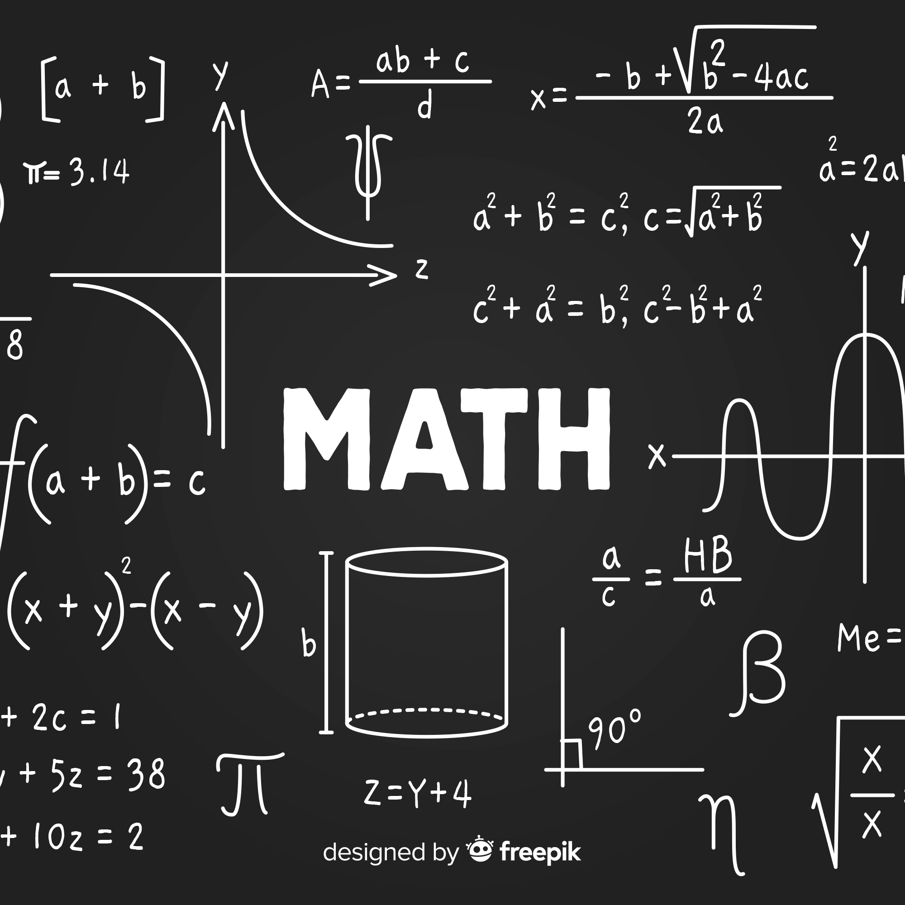
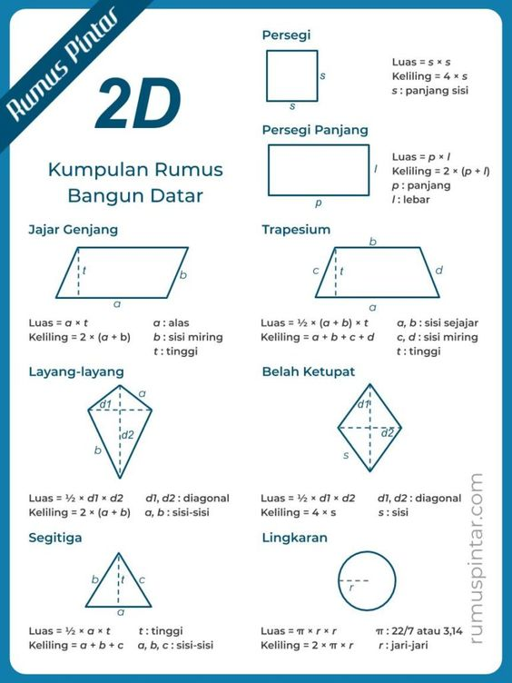
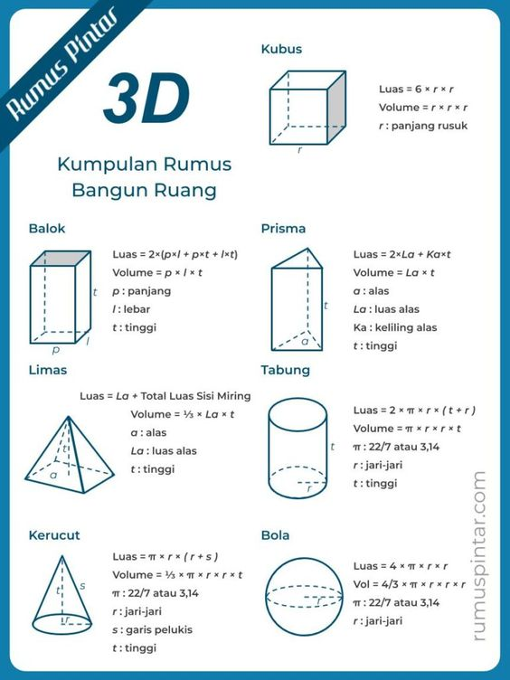

Apa itu Algoritma ?

Pengertian algoritma adalah suatu urutan dari beberapa langkah yang
logis guna menyelesaikan masalah. Pada saat kita memiliki masalah,
maka kita harus dapat untuk menyelesaikan masalah tersebut dengan
menggunakan langkah-langkah yang logis. Contoh dari algoritma
sederhana dalam kehidupan nyata adalah pada saat memasak air.
Hal-hal yang perlu dilakukan untuk memasak air seperti berikut :
siapkan panci, masukkan air secukupnya ke dalam panci, tutup panci
tersebut, letakkan panci tersebut di atas kompor, hidupkan kompor
dengan api sedang, apabila air sudah mendidih, matikan kompor,
setelah itu angkat panci tersebut dari kompor. Langkah-langkah untuk
memasak air tersebut merupakan algoritma memasak air. Sehingga
memiliki urutan langkah-langkah yang logis.
Apa itu Rumus ?

Rumus adalah cara tercepat atau singkat untuk bisa mencari informasi
terntentu yang menggunakan cara atau patokan, patokan tersebut
dilambangkan dengan sebuah huruf atau angka dan tanda, dan rumus
sendiri juga bisa dikatakan sebagai pernyataan atau kesimpulan atas
ketetapan atau pendirian yang disebut sebagai kalimat tepat dan
ringkas, rumus juga bisa diartikan sebagai salah satu metode ilmiah
atau langkah untuk bisa mencari konsep atau kesimpulan yang memiliki
hubungan timbal balik seperti dalam perdagangan, jika penjualan itu
lebih besar daripada biaya modal maka akan mendapatkan laba atau
keuntungan, dalam perkembangan tekhnologi rumus ini juga sangat
dibutuhkan khususnya untuk program excel yang memang sekarang ini
digunakan sebagai alat untuk melakukan kalkulasi atau perhitungan
pada suatu nilai, perhitungan itu bisa berupa pengurangan,
pembagian, penambahan, pangkat, atau lainnya
Berikut beberapa rumus dalam matematika
Rumus bangun datar

Bangun datar adalah suatu bidang datar yang tersusun oleh titik
atau garis-garis yang menyatu membentuk bangun 2 dimensi yang
mempunyai keliling dan luas. Bangun datar merupakan sebuah aksioma
di bidang ilmu matematika khususnya geometri analitik, karena hal
ini dapat terbukti dengan sendirinya tanpa melakukan pembuktian
matematika lebih lanjut [H.S.M. Coxeter, "Introduction to
geometry", Wiley (1969) pp. 178]. Dalam bahasa inggris bangun
datar disebut dengan plane geometry.
Rumus bangun ruang

Bangun ruang adalah bentuk bangun (struktur objek) di ruang 3
dimensi yang dapat diukur bagian-bagiannya dalam koordinat
kartesius di R³, yaitu sumbu-x, sumbu-y, dan sumbu-z. Secara
sederhana, bangun ruang merupakan objek yang diukur berdasarkan 3
variabel yaitu: panjang (x), lebar (y), dan tinggi (z).
Keberadaannya di ruang 3 dimensi menyebabkan bangun ruang
mempunyai volume dan luas permukaan.